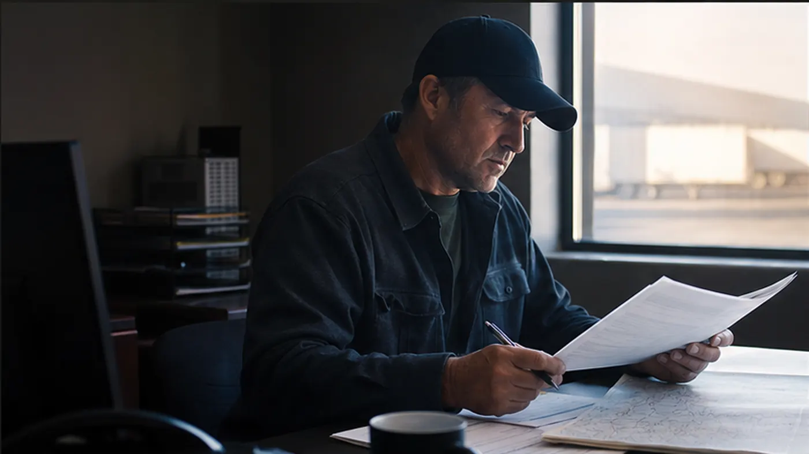

Quote review
Make the temporary quote understandable before approval.
Show mileage, rate components, equipment, accessorials, assumptions, and approval state without presenting estimates as final charges.
Continue in the portal →Quote Review
Review mileage, estimated cost, fuel surcharge, accessorials, and proof assumptions.
Preliminary quote
Customer reviewCalculating
This is configurable demo pricing. Final rate confirmation depends on lane, equipment, appointment, cargo, proof, and dispatch review.